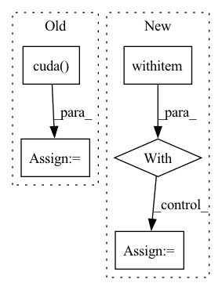

Pattern ID :31687

Before Change
noise = torch.randn((batch_size, 100))
if cuda:
noise = noise.cuda(local_rank)
G_result = G_model_train(noise)
D_result = D_model_train(G_result)
D_fake_loss = BCE_loss(D_result, y_fake)
After Change
//----------------------//
scaler.scale(D_real_loss).backward()
with autocast():
G_result = G_model_train(noise_1)
D_result = D_model_train(G_result)
D_fake_loss = BCE_loss(D_result, y_fake)
//----------------------//
In pattern: SUPERPATTERN
Frequency: 3
Non-data size: 5
Instances
Fragment ID: 92394689
Project Name: bubbliiiing/dcgan-pytorch
Commit Name: cdd6a27591afafb4f346acbea338b6e49c4333a8
Time: 2022-07-07
Author: 3323290568@qq.com
File Name: utils/utils_fit.py
M Class Name: AnonimousClass
N Class Name: AnonimousClass
M Method Name: fit_one_epoch(19)
N Method Name: fit_one_epoch(19)
M Parent Class:
N Parent Class:
M File Name: utils/utils_fit.py
N File Name: utils/utils_fit.py
M Start Line: 21
M End Line: 119
N Start Line: 25
N End Line: 114
'>
Before Change
if partition_gradients:
if self.overlap_comm:
self.local_overflow = self._has_inf_or_nan(self.gpu_sum)
self.gpu_sum = torch.zeros(1, dtype=torch.float).cuda()
overflow = self.local_overflow if self.offload_optimizer else self.has_overflow_partitioned_grads_serial(
)
//overflow = self.has_overflow_partitioned_grads_serial()
After Change
@instrument_w_nvtx
def has_overflow(self, partition_gradients=True):
if partition_gradients:
with torch.cuda.stream(self.__reduce_and_partition_stream):
self.local_overflow = bool(self.__inf_or_nan_tracker.item())
self.__inf_or_nan_tracker.zero_()
overflow = self.local_overflow
'>
Fragment ID: 92394688
Project Name: microsoft/deepspeed
Commit Name: 4912e0ad7efcaf97389ae944259aa0e9f331038a
Time: 2022-01-20
Author: 31414860+jfc4050@users.noreply.github.com
File Name: deepspeed/runtime/zero/stage3.py
M Class Name: DeepSpeedZeroOptimizer_Stage3
N Class Name: DeepSpeedZeroOptimizer_Stage3
M Method Name: has_overflow(2)
N Method Name: has_overflow(2)
M Parent Class: object
N Parent Class: object
M File Name: deepspeed/runtime/zero/stage3.py
N File Name: deepspeed/runtime/zero/stage3.py
M Start Line: 2861
M End Line: 2866
N Start Line: 2728
N End Line: 2732
'>
Before Change
queries_per_block = min(L, 1024//k)
threads = k * queries_per_block
blocks = ((L*k)//threads) + C + 1
query_map = torch.ones((N, H, blocks), dtype=torch.int32).cuda() * L
blocks_map = torch.ones((N, H, blocks), dtype=torch.int32).cuda() * -1
_, sorted_group_indices = torch.sort(groups, descending=True, dim=-1)
After Change
else:
// Allocate bookkeeping parameters to facilitate the kernel
with torch.no_grad():
Q_pb = 16
block_counts = (counts + Q_pb - 1) // Q_pb
block_counts = block_counts.int()
block_counts_cumsum = block_counts.view(-1).cumsum(-1).view(N, H, C).int()
indx_maps = torch.ones(
(block_counts.sum(), 4),
device=Q.device,
dtype=torch.int32
)
counts_cumsum = counts.cumsum(-1).int()
total_blocks = block_counts.sum().item()
// Actually perform the dot product
'>
Fragment ID: 92394691
Project Name: idiap/fast-transformers
Commit Name: ac1fd6316f59b56faa3b4e9236810d4e97ed5b15
Time: 2020-11-25
Author: avyas@idiap.ch
File Name: fast_transformers/sparse_product/__init__.py
M Class Name: ClusteredSparseDotProduct
N Class Name: ClusteredSparseDotProduct
M Method Name: forward(7)
N Method Name: forward(7)
M Parent Class: torch.autograd.Function
N Parent Class: torch.autograd.Function
M File Name: fast_transformers/sparse_product/__init__.py
N File Name: fast_transformers/sparse_product/__init__.py
M Start Line: 185
M End Line: 201
N Start Line: 164
N End Line: 208